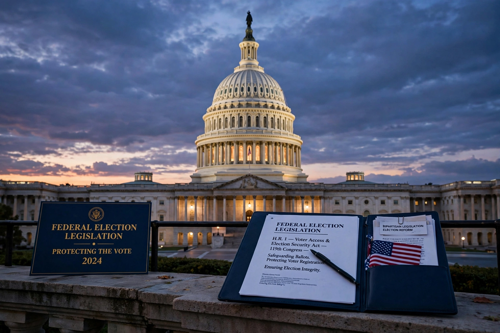

The Bipartisan Campaign Reform Act of 2002 (BCRA, Pub. L. 107–155), commonly called the McCain–Feingold Act after its Senate sponsors John McCain and Russ Feingold, is a United States federal statute amending the Federal Election Campaign Act. It regulated the financing of political campaigns, principally by banning "soft money" contributions to national political parties and restricting "issue ads" funded by corporations and unions close to an election.

| Bipartisan Campaign Reform Act | |
|---|---|
| Enacted | March 27, 2002 (signed by President George W. Bush) |
| Sponsors | John McCain (R-AZ), Russ Feingold (D-WI); Christopher Shays and Marty Meehan in the House |
| Amends | Federal Election Campaign Act |
| Key cases | McConnell v. FEC (2003); Citizens United v. FEC (2010) |
The Act prohibited national party committees from raising or spending soft money — unregulated donations from corporations, unions and wealthy individuals — and restricted state and local parties' use of such funds in federal elections. It raised hard-money contribution limits and indexed them for inflation. Its "electioneering communications" provisions barred corporations and unions from funding broadcast ads naming a federal candidate within 30 days of a primary or 60 days of a general election, and created the "Stand by Your Ad" requirement that candidates personally approve their advertising.
In McConnell v. FEC (2003) the Supreme Court upheld most of the Act. Later decisions dismantled key parts: FEC v. Wisconsin Right to Life (2007) narrowed the ad restrictions, and Citizens United v. FEC (2010) struck down limits on independent corporate and union spending, opening the way to Super PACs. McCutcheon v. FEC (2014) invalidated aggregate contribution limits.
See also: Campaign finance in the United States · Political funding · 527 organization